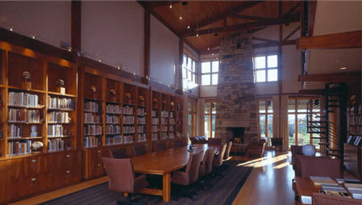

The Stone Age Institute

The Stone Age Institute® is a non-profit 501(c) (3), independent
research center dedicated to the archaeological study of human origins and technological development.
International in scope, the purpose of the Stone Age Institute (SAI) is to advance research and education
in human origins studies, including fellowship support to visiting scholars, publication of books and
articles, support of scientists drawn from global talent and intellect, and educational outreach to the
general public. Stone Age Institute funding provides support to in-house researchers and staff, enhances
laboratory research and field projects, enables the Institute to host visiting scientists, and sponsors
lecture programs and educational initiatives.
The SAI was founded as a non-profit in 2000 by Nicholas Toth, Kathy Schick, and Henry Corning, and is co-directed by Nicholas Toth and Kathy Schick. Construction of the research facility was completed in 2003. Although the SAI is an autonomous research organization, it also has strong ties with Indiana University, especially CRAFT (the Center for Research into the Anthropological Foundations of Technology), also co-directed by Indiana University Anthropology and Cognitive Science Professors Kathy Schick and Nicholas Toth.
Institute scientists pursue fieldwork and laboratory studies in various parts of the world as well as conducting research into the manufacture and use of stone tools, studying tool-making with modern apes, as well as brain imaging and biomechanical studies. The Institute is also very involved in science education, particularly through our FROM THE BIG BANG TO THE WORLD WIDE WEB™ project.
The SAI facility includes a world-class research library on early prehistory and an extensive artifact collection donated by the late J. Desmond Clark, professor of Anthropology at the University of California, Berkeley. In addition, extensive library collections of Alan Walker (Professor Emeritus of Anthropology at Pennsylvania State University) and of Alan Almquist (Professor Emeritus of Anthropology at California State University-East Bay), as well as volumes from the libraries of the late Leighton A. Wilkie (DoALL Tool Company), John Fleagle (Professor of Anthropology, SUNY Stony Brook), Karla Savage (Christensen Fund), the late Theodore McCown (UC Berkeley), and Sydel Silverman (Director Emeritus, Wenner-Gren Foundation) have donated to the Stone Age Institute’s growing resources.
The SAI was founded as a non-profit in 2000 by Nicholas Toth, Kathy Schick, and Henry Corning, and is co-directed by Nicholas Toth and Kathy Schick. Construction of the research facility was completed in 2003. Although the SAI is an autonomous research organization, it also has strong ties with Indiana University, especially CRAFT (the Center for Research into the Anthropological Foundations of Technology), also co-directed by Indiana University Anthropology and Cognitive Science Professors Kathy Schick and Nicholas Toth.
Institute scientists pursue fieldwork and laboratory studies in various parts of the world as well as conducting research into the manufacture and use of stone tools, studying tool-making with modern apes, as well as brain imaging and biomechanical studies. The Institute is also very involved in science education, particularly through our FROM THE BIG BANG TO THE WORLD WIDE WEB™ project.
The SAI facility includes a world-class research library on early prehistory and an extensive artifact collection donated by the late J. Desmond Clark, professor of Anthropology at the University of California, Berkeley. In addition, extensive library collections of Alan Walker (Professor Emeritus of Anthropology at Pennsylvania State University) and of Alan Almquist (Professor Emeritus of Anthropology at California State University-East Bay), as well as volumes from the libraries of the late Leighton A. Wilkie (DoALL Tool Company), John Fleagle (Professor of Anthropology, SUNY Stony Brook), Karla Savage (Christensen Fund), the late Theodore McCown (UC Berkeley), and Sydel Silverman (Director Emeritus, Wenner-Gren Foundation) have donated to the Stone Age Institute’s growing resources.
More About Us
Latest News

Human Cognitive Evolution course at King Abdullah University...read more

Dr. Colin Allen to discuss the evolution of expertise...read more

Dr. Peter Todd to discuss information exploitation strategies
...read more

What does it mean to have a belief?
read more
read more

How do apes communicate?read more

Cognitive neuroscience of stone tool manufacturing...read more